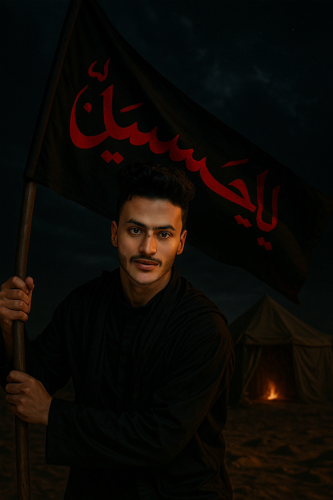

أهلاً ،وسلام الله عليكم ، أنا "مكتب الحسين علي القاسمي"
طالب الأمن السيبراني
أطمح لتعزيز الأمن في الشبكات والشركات، وفي خدمة الفضاء الاكتروني في يمن الايمان والحكمة ومساندة الجيش الاكتروني في الهجوم والاختراق وافشال اي هجمات سيبرانية عدوانية

نظرة سريعة
التعليم
جامعة صنعاء - كلية الحاسوب وتكنولوجيا المعلومات
مستوى ثاني - الأمن السيبراني
التخصص
الأمن السيبراني
الاختراق الأخلاقي
المهارات
Python
لغات البرمجة المتعددة